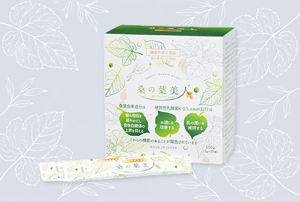

1杯に、
3つのケア。
桑の葉美人は、糖質ケア・腸活ケア・美肌ケアの
3つの機能をかなえる機能性表示食品。
糖質ケア
Sugar Care
腸活ケア
Gut Care
美肌ケア
Skin Care

無料サンプルお申込みはこちら
Googleフォームに移動します
Product
美肌×エイジングケア×ボディメイキング
美容と健康の
美味しい青汁
『桑の葉美人』は美味しくのみやすい粉末タイプの青汁です。
フラボノイドを豊富に含む桑の葉のほか、大豆イソフラボン、抹茶、乳酸菌、さらにプラセンタエキスを配合。糖質ケア・腸活ケア・美肌ケアの3つの機能をかなえる機能性表示食品です。

エステティック市場販売シェア No.1 美容青汁
桑の葉美人
機能性表示食品
- 内容量
- 3g × 50包
- 価格
- 5,508円（税抜5,100円）
※2023年8月エステティックジャーナル調べ
Free Sample
まずは無料サンプルで
体感してみてください！
体感してみてください！
サンプルのお申込みはこちら →
Googleフォームに移動します
How to Drink
おすすめの飲み方・
アレンジレシピ
あなたのライフスタイルに合わせて、おいしく続けられる飲み方をご提案します。
💧
シンプルに飲みたい方
水 200ml ＋ 桑の葉美人
1包を水に溶かすだけ。毎日手軽に続けられます。
🥛
腸内環境をしっかり整えたい方
ヨーグルト ＋ 桑の葉美人
善玉菌をダブルで補給。腸活を強力サポート。
🫘
美容と健康をしっかりサポートしたい方
豆乳 ＋ 桑の葉美人
大豆イソフラボンと組み合わせ、美容ケアを強化。
🍶
美肌・腸活・元気をトータルでサポートしたい方
甘酒 ＋ 桑の葉美人
発酵食品との組み合わせで内側から輝くケアを。
🌾
美容とヘルシーを両立したい方
アーモンドミルク ＋ 桑の葉美人
ビタミンEをプラスして、エイジングケアをWサポート。
Features
桑の葉美人の
3つの機能
Point
1
糖の吸収を緩やかにし
食後血糖値の上昇を抑える
食後血糖値の上昇を抑える
機能性関与成分：モラノリン
桑葉由来の天然成分「モラノリン」が糖の分解酵素を穏やかに抑制。食後の血糖値の急上昇を防ぎ、肌の糖化（＝くすみ・シワの原因）もケアします。
Point
2
肌の潤いを維持する
機能性関与成分：K-1乳酸菌（モイスト乳酸菌®）
K-1乳酸菌は肌の水分の喪失量を抑え、肌の潤いを維持します。肌のバリア機能が正常化し、キメが整った肌へと導きます。
Point
3
お通じを改善する
機能性関与成分：K-1乳酸菌（モイスト乳酸菌®）
K-1乳酸菌（お米由来のモイスト乳酸菌®）を1,000億個配合（1日摂取目安量2袋あたり）。腸内環境をケアして、スッキリした毎日をサポートします。
1,000億
個のK-1乳酸菌配合
（1日2袋あたり）
（1日2袋あたり）
2.8→4.7
回/週の排便回数
（摂取前→摂取後）
（摂取前→摂取後）
無農薬国産
自然肥料だけで育てた国産桑葉。安全・安心な素材にこだわりました。
GMP工場製造
原料受入れから出荷まで全工程で厳正な品質管理を徹底。
プラセンタエキス
SPF豚プラセンタをフリーズドライ製法で高品質を保ちながら配合。
大豆イソフラボン
年齢とともに変化する肌と体を若々しくサポート。
こんな方に、
桑の葉美人
case 1
糖質の摂取が
気になる方
case 2
腸活ケアを
したい方
case 3
内側からキレイを
目指している方
case 4
健康的な毎日を
維持したい方
Product Detail
商品詳細
商品画像
（差し替え用）
images/product-main.jpg
（差し替え用）
images/product-main.jpg
桑の葉美人
Mulberry Leaf
| 内容量 | 3g × 50包 |
|---|---|
| 価格 | 5,508円（税抜5,100円） |
サロン限定での販売です。
お近くの取り扱いサロンをご案内します。
※本品は機能性表示食品であり、疾病の診断、治療、予防を目的としたものではありません。
※食生活は、主食・主菜・副菜を基本に、食事のバランスを。
※本品は事業者の責任において特定の保健の目的が期待できる旨を表示するものとして、消費者庁長官に届出されたものです。ただし、特定保健用食品と異なり、消費者庁長官による個別審査を受けたものではありません。
※2023年8月エステティックジャーナル調べ